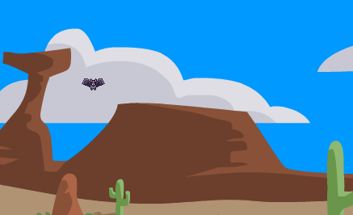
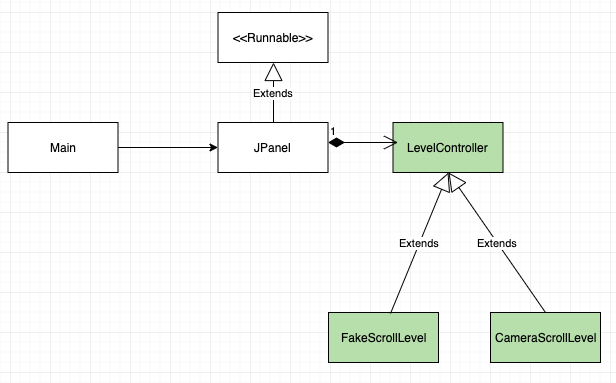
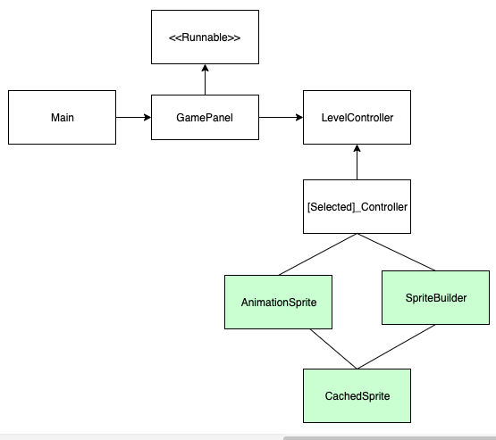
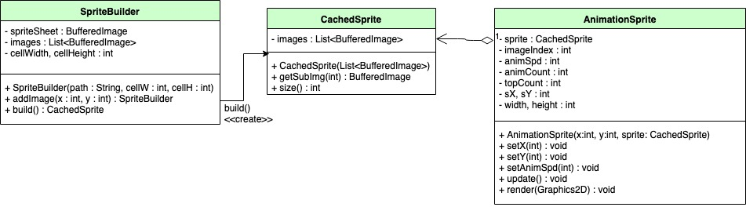

Sprites
¡Bienvenido de vuelta! Veo que sobreviviste a la primera tarea. ¿Cómo te fue? El jefe a veces se emociona un poco con sus proyectos, ¿no crees?
Esperemos que esta vez no le eche mucha crema a los tacos.
Oh mira, hablando de trabajo...
¡Raúl! ¿Qué es lo que tanto alegas acerca de crema y tacos? [Emm... nada señor... ¡Que su orden de tacos para desayunar ya esta lista!] Ah! Excelente! Con mucha crema justo como a mí me gustan.
Novato! Magníficas noticias! Les encanto el prototipo de fondos que desarrollaste. Pero ahora quieren que este un poco más interesante. Y dentro de su concepto de interesante estan los dibujos animados o como mejor los conocemos en la industria: "Sprites". Así que tu proxima tarea es incorporar Sprites al proyecto en desarrollo y hacerlo más "interesante".
Nuevamente no te preocupes por los detalles arquitectónicos. Somos una empresa con numerosos años de experencia por lo que recibiras soporte guiado así como diseños de clases sólidos.
Task Information
A2-Sprites
Descripción
'A2-Sprites' es la segunda iteración del prototipo previamente desarrollado. Debe demostrar la implementación de un sistema de manejo de Sprites aplicandolo en al menos un Sprite. De ser posible también se busca que cuente con elementos de jugabilidad como un personaje controlable y enemigos u objetivos.
Se espera la entrega para el día: Viernes 8 de Marzo del 2019
Estructura
Estructura de Partida
La estructura de donde partimos el proyecto es el esqueleto del juego desarrollado en la entrega pasada. Notese que el UML pueda diferir con el código mismo, sin embargo sigue siendo una buena herramienta para explicar los cambios al proyecto.
Estructura Nuevo
Agregaremos un módulo de Sprites formado por un par de subclases. Esto hará posible la inclusión de Sprites de diferentes fuentes y formas.
Sprites
Como ya sabras, la mágia detras de las animaciones es una colección de imagenes cuidadosamente dibujadas de tal modo que cuando las muestras secuencialmente una después de otra, dan la aparición de movimiento o cambio.

Sprites
Para lograr este efecto basta con tener una arreglo de imagenes, por ejemplo BufferedImage's cargados tal como lo hicimos con el fondo, y renderizar un elemento del arreglo a la vez. Para ajustar la velocidad de animación, podemos tener un contador/índice de la subimagen de la animación y hacer que solo incremente cada 5 ejeciciones de render(g) por ejemplo.
Sprites
Sin embargo, muchos de los retos al implementar Sprites son respecto a la flexibilidad de las animaciones, rendimiento y reutilización de los Sprites y cargado de SpriteSheets. Los SpriteSheets son imagenes en donde se especifican todas las subimagenes de una animación para evitar cargar múltiples archivos por cada animación.
CachedSprite
Empezemos entonces con nuestra primera clase encargada de alamcenar las subimagenes de un sprite.
Esta clase no tiene mucho más que la simple asignación del ArrayList en el método constructor y un método de acceso getSubImg(int i) a la subimagen en el ArrayList usando images.get(i)
AnimationSprite
Esta clase es más práctica, ya que representa un Sprite animado que podemos utilizar como componente en cualquier clase de nuestro videojuego. Como en un enemigo.
Veremos 2 maneras de implementar este efecto. La primera, probablemente familiar, consiste en simularlo dibujando 2 veces el fondo para crear un bucle. La segunda, dibujamos un mundo mucho más amplio que la pantalla, y hacemos que la 'cámara' de la pantalla se vaya moviendo en nuestro mundo.
Ambas técnicas tienen ventajas y deventajas que se verán a continuación.
SpriteBuilder
En Java es necesario poner nuestros recursos externos, como imagenes, adentro de carpetas fuentes del proyecto. Por lo que vamos a crear una carpeta nueva dandole click izquierdo al nombre del proyecto en Eclipse y seleccionamos la opción: New>Folder y la nombramos 'res'.
Después damos nuevamente click izquierdo en el proyecto seguido de Build Path>Configure Build Path. En la pestaña de 'Libraries' le damos click al botón 'Add Class Folder' y seleccionamos la carpeta res en nuestro proyecto.
Una vez hecho lo anterior, descarga la imagen del fondo del link en la siguiente viñeta "References and Resources". Puedes arrastrar el archivo descargado al programa de Eclipse y después a la carpeta res. O puedes copiar/cortar y pegarlo usando el explorador de archivos, etc. Nada más asegurate de refrescar tu proyecto cada vez que le agregues archivos sin ponerlos directamente con Eclipse. Para esto dale click izquiero al nombre del proyecto y selecciona 'Refresh'.
Si todo esta hecho correctamente, deberá mostrarse en tu carpeta res en Eclipse el archivo "sback.png".
Demostración
Como se muestra en la imagen, en esta técnica se dibuja 2 veces el fondo en diferentes posiciones. Llamemos a estas posiciones back1_x y back2_x. La idea es que la segunda imagen siempre esté por detrás de la primera, y de la misma forma, la primera esté por detrás de la segunda, mientras ambas avanzan con la misma velocidad. Esto crea un bucle infinito del fondo ya que cuando termina una imagen, la otra le sigue inmediatamente dando la ilusión que es el mismo fondo.

References and Resources
Links
- Sprite de Murcielago: bat-1.2.zip
...Hmmm esta salsa verde sí está bien sabrosa...
!Qué!.. ¿Qué haces aquí? !Ponte a trabajar y no me interrumpas sin avisar!